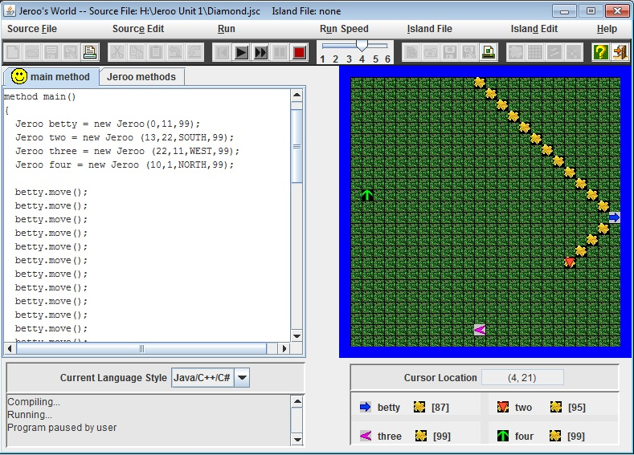
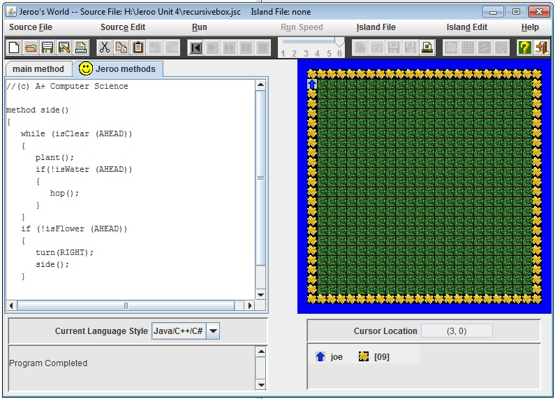

Unit 1

Description:
In this unit, we learned the basics of Jeroo. We learned the simplest of commands for Jeroo in order to run a program. For example, we learned how to move Jeroos around, and the basic commands that you can give a Jeroo.
Concepts Learned:
- How to create a new Jeroo, place it in a certain spot, give it flowers, have it point in a direction
- How to plant.
- How to hop.
- How to toss flowers into nets to get rid of the nets.
- How to have the Jeroos facing a certain direction
Unit 2

Description:
In this unit, we learned about methods. For methods, we learned that we could create a code that you could either copy and paste to repeat it or create a code that works for multiple Jeroos without writing the code more than once. Using methods, we were able to clear up the main method feed and make it easier for us to spot mistakes in our coding.
Concepts Learned:
- How to write code in the Jeroo Methods section in the program.
- How to think ahead so that the method could apply to all Jeroos.
Unit 3
Description:
In this unit, we learned how to use “While loops” in order to continue a piece of code under certain conditions. This allowed us to simplify the code and, by consequence, make it easier to find mistakes in the code. Using while loops, we also made it easier and faster for us to program things in Jeroo.
Concepts Learned:
- How to write a While loop and when to use it.
- How to write Boolean logic, or conditional statements.
Unit 4

Description:
In this unit, we learned how to incorporate if statements into our Jeroo coding. The point of if statements is to have a continuous, or recursive, code that would run until the if statements were false. For these problems, you had to really think ahead throughout the lab in order to create a working program using if statements.
Concepts Learned:
- How to write if statements and when to use them.
- How to think ahead to solve problems using if statements.